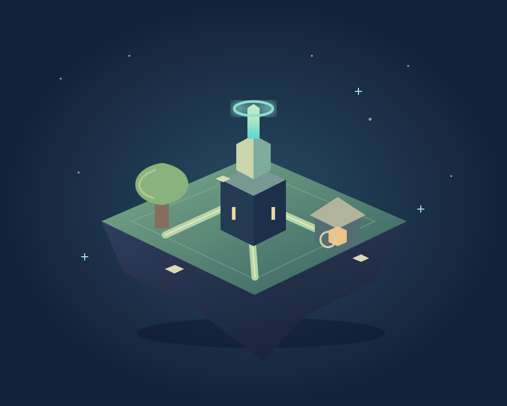

Connect the light
Rotate pathways and guide energy to its destinations. Each puzzle brings you closer to your next goal.
PUZZLES & WORLD BUILDING
Restore a quiet floating world through short energy-routing puzzles and visible building upgrades.
In development · AndroidLUMENFOLD: Pocket Worlds is in development for Android. A public Google Play release is not available yet.

Rotate pathways and guide energy to its destinations. Each puzzle brings you closer to your next goal.
Restore buildings, collect in-game resources and watch a small world take shape.
Play with a guest account or link an email account. Player names and verified puzzle totals can appear on the Top 100 board.
LUMENFOLD: POCKET WORLDS